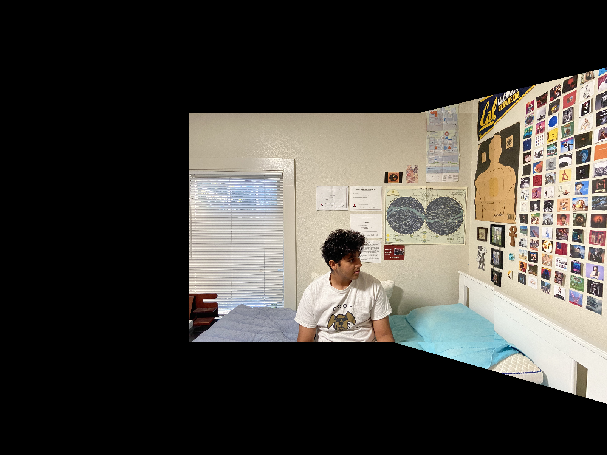
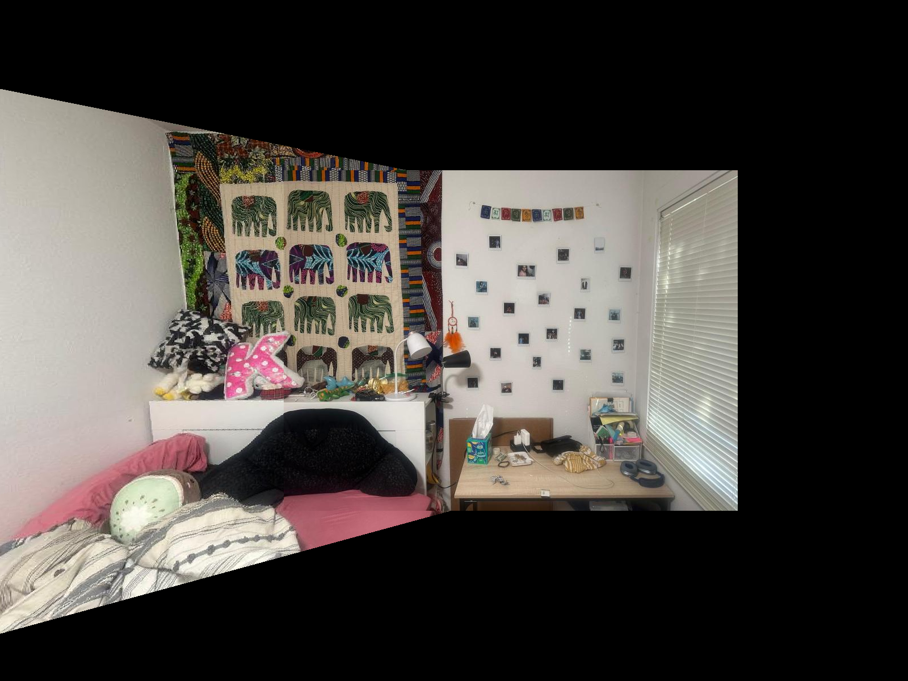
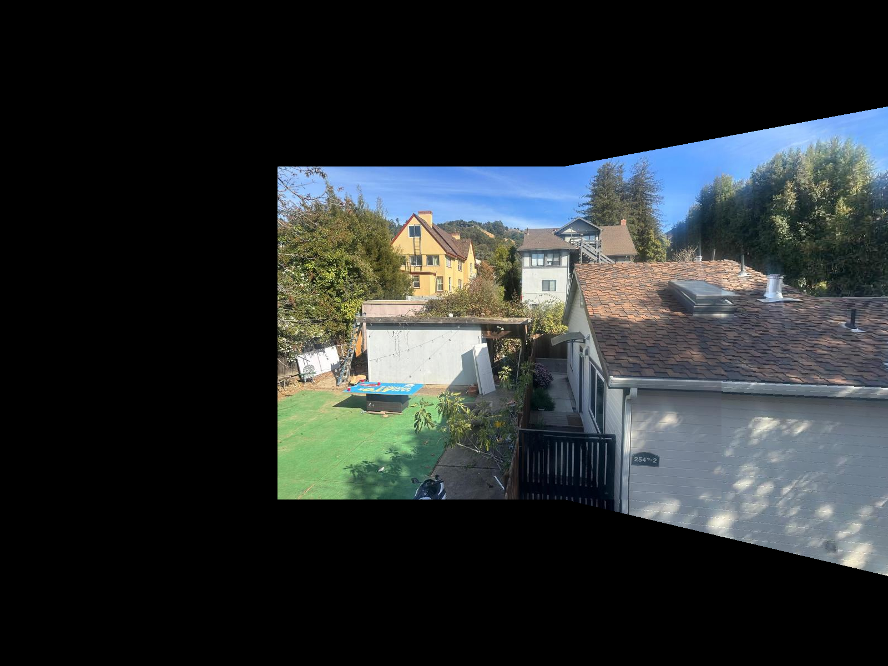

The homography matrix is found using the point correspondences. A system of linear equations is set up and solved, and the output is the 3x3 matrix. Below are the eqations used.
\[ \begin{align*} A &= \begin{bmatrix} -x_{\text{pts}} & -y_{\text{pts}} & -1 & 0 & 0 & 0 & x_{\text{pts}} \cdot x_{B\text{pts}} & y_{\text{pts}} \cdot x_{B\text{pts}} & x_{B\text{pts}} \\ 0 & 0 & 0 & -x_{\text{pts}} & -y_{\text{pts}} & -1 & x_{\text{pts}} \cdot y_{B\text{pts}} & y_{\text{pts}} \cdot y_{B\text{pts}} & y_{B\text{pts}} \end{bmatrix} \end{align*} \]
Where (xpts, ypts) are the points for the first image and (xBpts, yBpts) are the points for the second image
The warp function warps an input image using the specified homography matrix defined above. It creates a grid of coordinates covering the image dimensions and transforms these grid coordinates according to the homography matrix. Transformed pixel values are extracted from the input image and the final image is made by interpolating these pixel values over the new coordinate grid using linear interpolation.


The images shown below confirm that the warping function works. As before, the point correspondences were defined uskng the online tool and one of the paintings in the image was matched with a corresponding rectangle. Since the rectangles are correctly warped, we can move on to creating the mosaic
This function blends two images of the same dimensions to create a seamless transition between them. It does so by: 1. Converts both images to grayscale to create masks that identify non-zero regions to create the mask 2. Then it identifies overlapping regions where both masks are true 3. I used distance transforms to calculate weights for each image based on proximity to edges. The weights are then adjusted in overlapping regions to balance contributions from both images 4. Applies calculated weights to blend the images, ensuring smooth transitions in overlapping areas.
  First, all corners in the image are detected using the Harris corner detection algorithm, and the scores h for each pixel are retrieved with get_harris_corners(). The detected corner coordinates are stored in coords. To prevent detecting corners too close to the edges, any points within a set edge_discard distance are removed, ensuring the selected corners are well within the image boundaries. The function dist2() is then used to calculate pairwise distances between detected corners. This distance matrix enables further filtering of corners by proximity, ensuring an even spread across the image if required. Finally, visualize_corners() overlays the detected corners on the original image, displaying each corner as a red dot.
This code performs corner detection on two images using the Harris Corner Detection algorithm, then refines the detected corners with Adaptive Non-Maximal Suppression (ANMS) to retain the strongest and most spatially spread-out points.
The get_harris_corners() function detects potential corners and assigns a score to each, indicating the corner strength.
adaptive_non_maximal_suppression() filters these corners. Pairwise distances between corner points are calculated, and only the most prominent corners with a wide spatial distribution are retained by setting a minimum radius for each point, using a comparison threshold (c_robust).
The visualize_corners() function overlays the final selected corners on the original images as red dots, clearly marking the detected corner points.
This code extracts feature descriptors from selected corner points in two images, representing unique patches around each corner. It then visualizes a subset of these feature patches.
The extract_feature_descriptors() function takes a 40x40 pixel patch around each corner, resizes it to 8x8, normalizes it by subtracting the mean and dividing by the standard deviation, and then flattens it. This results in an array of feature descriptors.
The display_feature_patches() function displays the first few feature patches in a grid, representing local features around corners.
I have taken some inspiration from ChatGPT and pretrained LLM's to create the structure for some parts of the website.
Back to Main Page